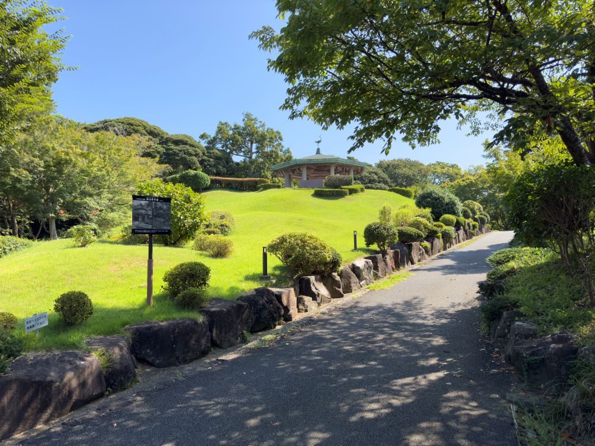

The journey not
the arrival matters.
湘南の「あなただけ」を探してみよう。
「旅とは、どこかに辿り着くことが重要なのではない」
イギリスの詩人、T.S.エリオットが残したことば。
見知らぬ土地での新たな発見や多くの出逢い
そんな「過程」を愉しむのも、案外良いのかもしれない。
RECOMMENDED
-
- 肉と野菜の店 相模園
- 厳選された地元食材を使用した料理が絶品の、古民家風レストランです。
-
- Amalfi WHITE GARDEN
- ラスカ平塚屋上にあるガーデンと一体化したレストラン。テラス席ではBBQもお楽しみいただけます。
-
- ブーランジェリー ヤマシタ
- 街中にぽつんと佇むおしゃれなベーカリー。カフェも併設されており、まるでジブリのような世界観を感じられます。
-
- OISO CONNECT
- 大磯ならではの農水産物等を扱うショップや、地元の食材にこだわったカフェなどで構成される交流施設です。
-
- 平塚市博物館
- 「相模川流域の自然と文化」をテーマとした、様々な展示が楽しめる地域博物館です。
-
- Rive Montagne
- ベルギーの本場料理を頂くことのできるお洒落なカフェです。
-
- 平塚漁港の食堂
- 農林水産省の6次産業認定を受け誕生した、新鮮な地魚をいただける食堂です。
-

- 旧三井別邸地区
- 三井財閥当主が構えていた別荘やその庭園の歴史を残して1987年に県立大磯城山公園内の一部として開園された地区です。